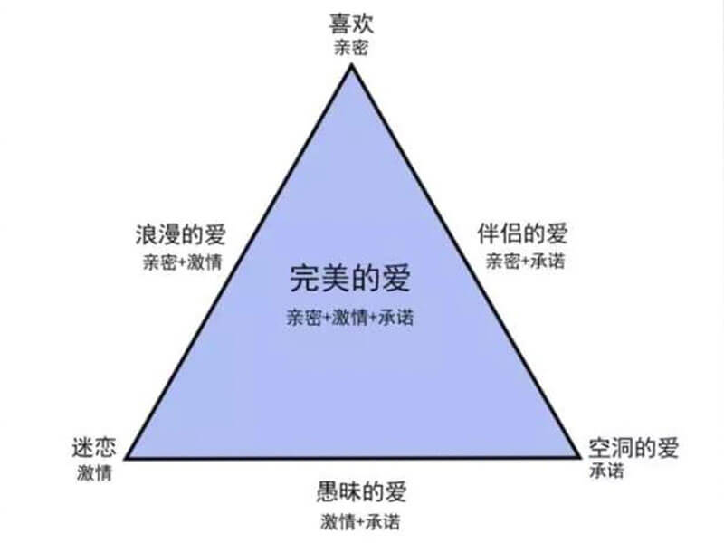
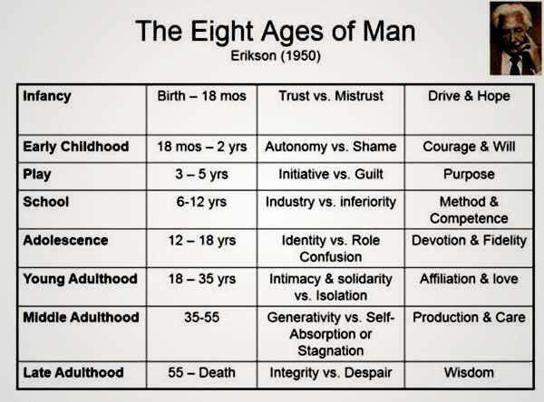
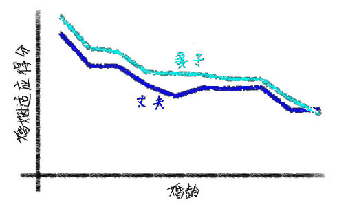
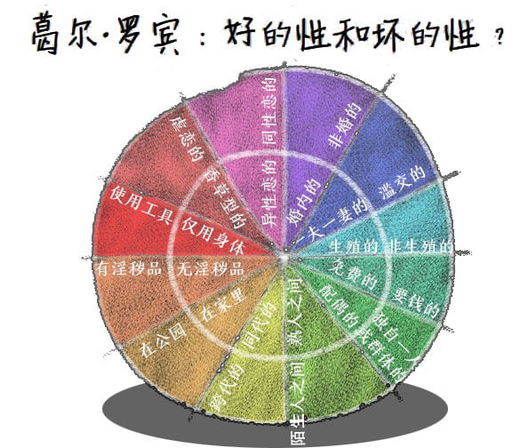
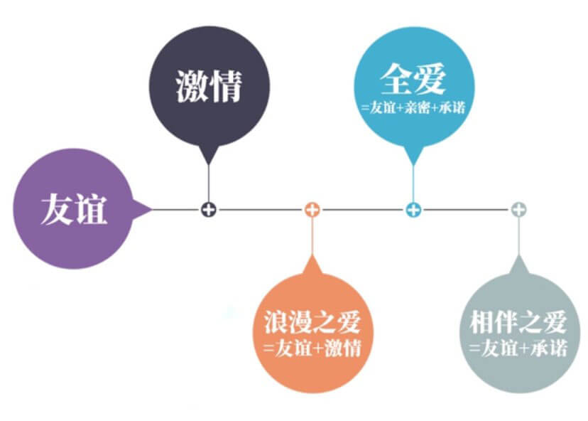

资源
正文
开场篇：26 个问题里藏着你的爱情小秘密
爱情心理学：26 个问题揭开你的爱情小秘密
-
第 1 章：吸引
-
这是个看脸的世界吗？
-
为什么异地恋容易分手？
-
到底是“相似相吸”还是“互补相吸”？
-
什么叫做罗密欧与朱丽叶效应？
-
-
第 2 章：爱情
-
来电是一种怎样的感觉？
-
爱情也要气味相投？
-
你的爱情是个三角形吗？
-
-
第 3 章：示爱
-
爱要怎么说出口？
-
确认过眼神，就是对的人？
-
你用什么获得爱？
-
-
第 4 章：孤独
-
孤独是一种怎样的体验？
-
你为什么谈恋爱？
-
-
第 5 章：择偶 / 脱单
-
如何科学脱单？
-
你可知，美貌也有代价？
-
渣男有哪三板斧？
-
“渣男体质”怎么破？
-
-
第 6 章：B 面 / 压力
-
男人和女人，谁更容易嫉妒？
-
如何识别 TA 的谎言？
-
被背叛后，怎么办？
-
-
第 7 章：婚姻
-
婚姻也是一场社会交换？
-
夫妻之间如何正确的吵架？
-
如何让婚姻更美满？
-
-
第 8 章：性
-
神马？性也有好坏之分？
-
如何对娃娃开展性别教育？
-
性少数，你怎么看？
-
（emmmm 我检查了好几遍发现只有 25 个问题……）
第一章：吸引法则
1.1 看脸的世界？
不看外表才肤浅。
——王尔德
颜值即是正义?
光环效应：美的就是好的
研究发现：有外表吸引力的人与不具备相比，
更可能 :
- 善良、坚强、有趣、外向、性格好，有教养；
未来更可能：
- 更尊贵、更容易结婚、婚烟更幸福、生活更充实、社交和职场更为成功。
漂亮的人挣钱更多？
- 研究发现 : 匹兹集大学 MBA 毕业生长相分为 1 至 5 级，发现长相每升高一级，男性的年薪平均增加 2600 美元，女性增加 2150 美元。
漂亮的人更容易结婚？
-
“看脸”在人类的优生繁衍上是重要的一环。
-
颜值体系为异性的择偶过程提供了最丰富、最节约成本、最精住的基因优选标准。
什么样的女性 / 男性面孔很迷人？
-
观点 1：进化决定美貌的标准
-
观点 2：文化决定美貌的标准
美貌的代价
美貌带来光环效应的同时也带来刻板印象。
-
貌美之人对他人的信任较低；
-
貌美之人比较缺乏同性友情。
中等漂亮或成最大赢家？
-
不漂亮的人不招人喜欢
-
中等漂亮的人很招人喜欢
-
过于漂亮的人不招人喜欢
结论：
-
相貌好的人更具有吸引力。
-
美貌在拥有优势的同时也有代价。
1.2 只有接近，才能喜欢
箴言：与人见面不一定会爱上他们，但爱上他们必须要先见到他们。
交流的回报性
-
近水楼台先得月
-
远亲不如近邻
-
观点 1：近，我们更易享受他人提供的各种回报。
-
观点 2：近，更可能成为朋友
- 启示：一旦我们选择了要居住、工作或上学的地方，我们同时也选择了我们将与之建立亲密关系的人。
-
观点 3：近，能增加幸福感和免疫力
- 结论：当人们彼此接近时，能听到你的声音，看到你的微笑，闻到你的气味，握到你的手的时候，这样发展的感情更真实、更具备回报性。
距离是有成本的
- 结论：出现的次数越多越喜欢
接近也会产生不利的作用
-
观点：我们和我们有好感的人相处，越熟悉，越喜欢；我们和我们讨厌的人相处，越相处，越讨厌。
- 事实：我们的朋友在我们附近，我们的仇人也在。
-
观点：随着交往互动的深入，我们对对方的喜欢程度呈倒 U 型；
- 启示：近则不逊，远则怨
结论
-
人际交往是讲究回报成本的。
-
越接近，越喜欢。
-
再亲近的人，也要保持私密空间。
1.3 喜欢和自己相像的人
无论是朋友还是恋人，幸福的伴侣在各方面彼此都很相似。
哪方面的相像才会彼此喜欢？
-
有着相似背景、性格、外表吸引力和态度的人们才有可能彼此吸引。
-
背景吸引力：年龄、种族、受教育水平、宗教信仰和社会阶层。
-
性格吸引力：两性特质 / 男性特质 / 女性特质
- 研究证明，同时具备两性特质的人，会比传统的、单一化的性格特质更具有吸引力。
-
外表吸引力
-
态度吸引力：
-
你和你朋友喝酒抽烟的情况可能都是一样。
-
如果你大学毕业时还是处女，你最好的朋友可能也是。
-
结论：“共同点越多越好”才能成为“莫逆之交”。
-
相反也有吸引力么？
-
老少配？
-
进化心理学：女子的年轻貌美与男子的地位资源相互交换很普通，这也是一种般配。
为何相像具备吸引力？
-
相像让我们感到安心
-
相似可以避免很多冲突
-
相像更容易带来愉快的交往
结论
-
我们喜欢和自己相像的人。
-
我们更有可能结交和自己相像的人。
1.4 喜欢得不到的人
每个人的心中，都有自己的红玫瑰和白玫瑰。
棒打鸳鸯散不散？
-
罗密欧与朱丽叶效应：父母越是干涉他们的交往，他们彼此越相爱。
-
心理逆反理论：当我们面临失去的威胁时，我们可能会更想得到。
孤独和恐惧增加吸引
-
打烊效应（孤独）：当每天晚上随着酒吧关门的时间临近，你可能又将面临孤独一人的时候，你会觉得身边的人吸引力增强。
- 断桥实验（恐惧）
“得不到，已失去”总是最珍贵？
-
“契可尼效应”：我们对已经完成的、有结果的事很容易忘掉，对被迫中断的、无法完成的事却记忆犹新甚至刻骨铭心。
-
初恋，是经过 PS 的，怎么看怎么美好。你回忆的不是那个人，是那些时光，那种情怀，以及那些难以忘却的记忆。
结论
-
我们喜欢得不到的人
-
困难、孤独和恐惧能够增加吸引
-
我们都会有“未完成情结”，并且想要去完成它。
第二章：情为何物
2.1 恋爱的感觉
谈的就是感觉，
要的就是心动。
什么是“感觉”
场景一
-
当你在茫茫人海中遇到对方的那一刹那
-
假如，这时 TA 向你微微点头或者回眸一笑……
场景二
- 路径图：初识→互动→反馈→恋爱中→分手
感觉体验之——多巴胺
- 感觉——身体层面——激素
感觉体验之——气味
“一见钟情不是你一眼看上了我或者是我一眼看上了你，不是看，是味道，彼此被对方的气味吸引了，迷住了，气味相投你懂吗？”
——《非诚勿扰》
- 当心仪的两性相遇时，就会被这种几乎觉察不到的气味吸引。
- 味道-呼吸中枢-加快呼吸-氧供应-兴奋
结论
-
心动快于脑动
-
气味相投让我们在一起
2.2 情为何物
为世间，情为何物，直教人生死相许……
问世间，情为何物，只不过一物降一物……
斯滕伯格的爱情三元观
“如果一个人具有你所期待伴侣的所有品质，但你对他没感觉，你会和他结婚吗？”
新生事物：爱情的必要性
亲密：
-
热情、理解、交流、支持和分享 温暖 友情
-
亲密是爱情的必要不充分条件
启示：你们能否做聊得来的朋友？
激情：
-
来电的感觉
-
被吸引 欲望
启示：增加些男性和女性的性别魅力
承诺：
-
短期：指一个人做出了爱另外一个人的决定。
-
长期：指那些为了维持爱情关系而作出的承诺或担保。
喜欢和爱
-
契约
-
排他性

结论
爱情的成分亲密、激情、承诺，缺一不可。
2.3 爱情的类型
爱情是一个故事，每个人都拥有属于自己的故事类型，人们基于自己的故事去建构亲密关系。
——罗伯特·斯腾伯格
浪漫之爱，友谊之爱，愚爱，圆满的爱
-
浪漫之爱 = 亲密 + 激情
-
友谊之爱 = 亲密 + 承诺
-
愚爱 = 激情 + 承诺
-
圆满的爱
**Key 1：**爱情的发展在不同阶段三角形的状态是不同的，暧昧到蜜月到磨合到平淡。
**Key 2：**爱情是两个人的事。
熊氏爱情三好观(杰西·熊，2016)
-
你好不好，他好不好？
-
他对你好不好，你对他好不好？
-
他对你的好是不是你需要的好，你对他的好是不是他需要的好？
结论
-
爱情的三角形在时间进程中变化。
-
“好”的新解可作为衡量爱情质量的指标之一。
2.4 安全感
你如果没有安全感
把安全带系上
信任是爱情最佳防护网
你如果没有安全感
把安全帽戴上
自信就不怕有人跟你抢
——SHE
安全感——确定
-
他是真的爱我吗？
-
我们是否可以一直在一起走到最后？
回避 → 不如不要开始
控制 → 监视对方的状态
一种从恐惧和焦虑中脱离出来的信心、安全和自由的感觉，特别是满足一个人现在（和将来）各种需要的感觉。
——马斯洛
缺乏安全感：
-
眼神
-
感受
-
反应
-
言语
-
动作
傻白甜 ≠ 安全感高
依恋
婴儿依恋模式
-
0-3 岁关键期
-
伪命题——有奶便是娘？
| 低焦虑 | 高焦虑 | |
|---|---|---|
| 低回避 | 安全型 | 痴迷型 |
| 高回避 | 疏离型 | 恐惧型 |
-
认识，理解自己
-
爱的治愈功能——重建信任
结论
-
安全感源自早期经历，影响我们的亲密关系
-
爱是疗愈关系的唯一解药
第三章：爱的表达
3.1 爱要怎么说出口
男人殷勤，那是他爱你，他笨拙，那是他太爱你，他从容了，他已不再爱你。
搭讪
原则一：第一时间开口
在遇到心仪的异性时，几乎是在彼此眼神对视的第一时间，就开口说话。
原则二：以第三方事物为共同话题
不要聊对方本人，这会增加对方的紧张感，降低成功率。
原则三：问最容易回答的问题
自我表露
-
如果两个人不分享一些个人的、私密的信息，
-
两个人不能认为是亲密的。
-
自我表露让人感觉良好，它会改善人的心情。
45 分钟 → 对等性 → 敏感性
如何安慰失去至亲的人？
-
应该提及失去了的这个人。
-
简单真诚的话语，倾听和共情。
好：
-
很遗憾
-
为你感到难过
不好：
-
越早放手，越好
-
你会度过去的
-
你还年轻，你还会有更多的孩子
自我表露的过程
- 太快的自我表露（一见钟情式）暂时引起兴奋，但冲突随之而来。 交浅言深：没有建立信任的基础
自我表露的对象
-
女性对男性开放，男性对女性开放。
-
女性之间相互开放，男性之间很少开放。
-
在感情的温暖和亲密方面，男性依赖女性要多于女性依赖男性。
自我表露和关系的满意度
-
自我表露与喜爱正相关。配偶自我表露越多，他们的婚姻就越幸福。
-
即使在最亲近的关系中，我们也需要保留一些只属于自己的东西。
表白
-
你会喜欢我吗？不会啊。那我教你好了。
-
你住在我心里那么久，请问房租交了吗？
-
热烈。
结论
-
搭讪是一项可以习得的技能。
-
自我表露会增加亲密度和幸福感。
-
表白是感情水到渠成后的自然选择。
3.2 藏不住的爱
世上有三样东西藏不住：咳嗽、贫穷和爱情。
非语言交流
-
非语言交流：通过非语言行为或身体语言来交流和传达信息。
-
作用：提供信息；决定交往；表达亲密；社交控制
-
面部表情、目光、手势、身体接触、身体移动、姿势、穿着打扮、语音语调音量大小。
-
60%~65% 的人际交流属于非语言行为。
-
面部表情的普遍性能够传达很多信息。（喜怒哀乐）
-
凝视：一个人凝视的方向和数量也是有影响力的。凝视意味着兴趣沟通。
-
身体语言：身体语言更诚实，它更可能暴露我们的真实情感。身体语言可以揭示身份。身体的放松程度表达关系的亲密性。
-
身体接触：一般，关系越亲密，身体接触越多。牵手、拥抱、接吻及性生活都是重要的表达爱的方式。
-
人际距离：
-
亲密距离：0.5 米
-
男性之间的距离＞女性之间的距离
-
不幸福的伴侣的距离＞幸福的伴侣的距离
-
-
准语言：节奏、声调、音量和速度 不在乎说什么，而在乎怎么说。
-
非语言交流的敏感性
-
伴侣们非语言交流的敏感性会预示他们关系的幸福程度。
-
女性比男性更会从非语言线索中辨明实际的情况。
非语言的男女差异（针对异性）
| 非语言行为 | 女性 | 男性 |
|---|---|---|
| 微笑 | 更多 | 更少 |
| 凝视 | 说话时较少 | 说话时较多 |
| 姿势 | 封闭、对称 | 开放、不对称 |
| 身体接触 | 较少 | 较多 |
| 距离 | 较近 | 较远 |
| 非语言敏感性 | 较强 | 较弱 |
结论
-
非语言交流是沟通亲密关系的有力工具。
-
非语言交流差的夫妻一般对婚姻的满意度较低。
3.3 获取爱的 3 种兵器
每个人都需要爱，无一例外。
主题：获得爱的 3 种兵器
优秀
-
幻想：是不是我很优秀了，你就会喜欢我？
-
自恋（narcissism）精神病学家、临床心理学家借用这个词，用以描绘一个人爱上自己的现象。
-
全能自恋：婴儿时期，地球因我而转。
-
科胡特：自恋源于生物自我展示和自我认可的愿望，是一种自我价值感。
-
回避
- 越是喜欢一个人，就越是躲着他。越是在意一个人，就越是假装无所谓。主动羞耻感
付出
- 爱中鼓励人们勇于付出。为什么有时候绝对的付出会让我们失去爱？
情绪
-
在关系中，情绪是最常见的获得爱的方式。
-
生气、伤心、痛苦、失望、委屈。
-
我对你有情绪，只不过是因为我需要你。
| 优势 | 劣势 | 使用效果 | 是否推荐使用 | |
|---|---|---|---|---|
| 优秀 | 变好总是好事 | 你优秀不等于别人喜欢你 | 4 颗星 | 充分沟通后使用 |
| 回避 | 方便自欺欺人 | 独角戏 | 0 颗星 | 推荐未成年人使用 |
| 付出 | 人心都是肉长的 | 良心容易被狗吃 | 3 颗星 | 平衡使用，不带道德判断的使用 |
| 情绪 | 先声夺人 | 对牛弹琴 | 3 颗星 | 慎用 |
结论
-
每个人都需要他人的爱。
-
优秀、付出、情绪是我们常用的获得爱的三种方式。
3.4 友谊和爱情
最好的爱情从友情开始。
友谊比我们想象的更重要
-
友谊是我们快乐的源泉
-
一项针对年轻人的研究发现，超过三分之一的人（36%）都认为友谊是他们目前“最亲密、最深刻、投入最多”人际关系。
-
我们每拥有一个快乐的朋友，自己的快乐机会就会增加 15%（christakis&fowler,2009）
-
-
朋友往往会影响我们爱情的走向
-
朋友很可能把我们介绍给可能的对象，并为此奔波忙碌，以帮助我们的新恋情进一步发展（ackerman&kenrick,2009）。
-
朋友通常会对我们发展中的恋情投赞成或反对票，他们的看法往往会影响我们的决定（etcheverry rt al.,2008）。
-
友谊与爱情
-
友谊和爱情的区别
-
友谊没有排他性
-
友谊可以多人行
-
友谊也没有性含义
-
友谊是平等的伙伴关系
-
友谊和爱情的关系
-
浪漫之爱 = 友谊 + 激情
-
相伴之爱 = 友谊 + 承诺
-
-
原来，友谊是爱情的重要组成部分
友谊到爱情
-
男人和女人之间常常能成为异性好友的。
-
异性友谊的考验：是否应该实现从友情到爱情的跨越式发展？
-
多数异性友谊会尽量停留在柏拉图阶段
-
缺少性的欲望与冲动
-
没有足够强的意愿
-
有时候，人们不愿意冒着失去有价值的人际关系的风险，而把异性友谊转变为爱情。
-
已婚的夫妇不可能像单身男女那样拥有亲密的异性友谊。
-
结论
-
友谊比想象的更重要，它是我们快乐的源泉。
-
友谊是爱情的重要组成部分。
-
友谊可以发展成为爱情。多交异性好友会带来许多好处。
第四章：独处与孤独
4.1 亲密与孤独
昨夜西风凋碧树，
独上高楼，望尽天涯路。
什么是孤独
-
孤独：一种丧失和不满意的感觉。 我们对社会关系的期望与现实的不一致。
-
类型：社交孤立 & 情绪独立
-
你孤独吗？UCLA
-
你是否感到同周围的人很“合拍”
-
你是否感到被忽略了
-
你是否感到与他人隔绝
-
你是否感到没人真正了解你？
1 从来没有 2 几乎没有 3 有时候 4 总是
-
-
孤独的感觉
- 不满意、失落、悲伤
- 绝望、难耐的厌烦、自贬和沮丧
-
孤独时你会做什么？
-
怎么办？
-
积极的建设性行为
-
学习，写作，升华
-
情绪——成果（伟大著作的诞生）
-
去交往！
孤独的本质——不被理解、不被关心
孤独的原因
-
原因归结：
- 我不好，不值得爱，自责——NO 看看周围环境——一群人面临的
如何应对孤独
放下敌意，主动去寻找他人身上好的品质。照镜子（你眼中的 ta & ta 眼中的你）良性循环
结论
孤独是一种失落与不满的感觉，我们可以通过努力减轻这种体验。
4.2 恋爱动机谈
知其所以然，
才能知其然。
恋爱的心理需要
大学校长开学典礼致辞
“大学要谈恋爱” 比如每天都要去图书馆看书，每天都要坚持锻炼身体一小会；每周要争取读三本书；要在大学收获知识的同时，也要快乐地生活……每天都要写一段英文文章，对练口语等……要学点理财知识……担心入不敷出，
这些都非常好。但我也有一点点意外，没有一位同学留言说要收获爱情，其实大学中的爱情也是很美好的，看来同学们小小年纪也知道真心话不随便说出来。
恋爱需求的心理背景
- 马斯洛需要层次理论
- 人的需求从下到上分为五个层次：生理需求、安全需求、爱与归属感需求、被尊重的需求、自我实现需求
- 按照从下到上的顺序，只用每一层需要得到满足，才会上升上一层需要。
- 埃里克森人格发展阶段论

大学恋爱为哪般？
从众？孤独？目标？依赖？炫耀？爱了？生理需求？好奇？
他说“我有过一段很压抑的时候……孤独且困惑……没有女朋友的陪伴是我阴暗生活的源头。后来找了一个女朋友，刚开始的时候，非常开心。但是后来发现其实我的问题根本就不在于有没有女朋友……觉得自己的生活完全被占据了。后来性格的摩擦越来越多”
她说“在我的人生里我也经历过这样一个阶段。自己无趣到极点，因为自己的无趣找的男朋友自然也有趣不到哪里，我那时的生活单调、平淡到了极点……恐慌……每日每天碌碌无为……男朋友不是我想要的，可是我又不知道我想要怎样的。”
孤独与恋爱
孤独
-
立即寻找朋友 or 做无意识活动消磨时间
-
选择那些娱乐取向的独处活动沉浸在活动中
-
如何与自己相处，去靠近一点自己
平衡：独处 + 拓展社交关系 = 健康的个人成长
独处=?内向
-
爱好独处的人完全可能乐观活泼，外向达观。
-
对于某些人，独处是一种内在整合机制。
-
没有自我的人，再无聊的消遣也比独处美好。E.g.异地恋
结论
懂得为什么而爱让我们更好地体验爱情。
4.3 恋爱前功课
别人都不曾费心走那么远，别人都觉得寻找太麻烦， 所以没人发现过我的美丽，所以没人到过这里。
爱情的吸引力
不知道喜欢什么样的人 → 不知如何表白 → 不知如何相处 → 不知如何分手
-
羞涩，脸红
-
迷恋 ta，想念 ta，更爱 ta
-
某个阶段的理想化和赞美及被赞美
-
精神焕发，活力无穷
-
我更了解我，更喜欢我
恋爱预备备
没有该不该！！！！
缘分来了你莫挡
缘分未来你莫烦
你为什么没有女朋友？？？？
你为什么没有男朋友？？？？
多一点真诚，少一些套路！！！（也别太直）
自我建设=外表+乐趣+交往
表白与拒绝
-
恋爱 N 问：
-
我要不要表白？
- 困惑指数：※※※※
-
我该如何拒绝 ta?
-
困惑指数：※※※
-
几条原则：
-
感激。被一个人喜欢，是件很难得的事情。
-
肯定 ta 的勇气
-
考虑清楚了吗？明确清晰
-
不进行人身攻击
-
-
-
结论
-
自我建设是根基
-
尊重自己，尊重别人
4.4 害羞
最是那一低头的温柔
像一朵水莲花不胜凉风的娇羞
害羞的正反面
-
第一类是那些不寻求社会交往而愿意独处
-
第二类个体不愿意接近他人，他们缺少社交技巧和自信
-
第三类并非不愿与人交往，他们的社会期待值过高，他们担心达不到相应的社会期待水平而采取回避的方式
-
自己眼中，很容易害怕。胆小、谨慎、不信任而难以接近，谨言慎行 不妄下断言 敏感。
-
在他人眼中，可能会认为你是生性孤僻、保守、不自信 可疑、内心阴暗的。 好委屈 55555
害羞的人（人格特质）≠ 特定环境中的害羞
害羞人群分布及比例：每遇到 10 个人就会有 4 个人正在体验与经历着害羞。
害羞的坏处
-
焦虑，充满痛苦
-
脉搏跳动加剧，心跳加速，出汗，而且还会神经质发抖。还有一个最经典的表现，就是无法躲避的脸红。
害羞还会影响一个人的注意力和记忆力：认知资源都去关注自己的窘迫了，怎能真正去探索外界新事物呢？
害羞对亲密关系会有妨碍吗？
-
亲密关系——让对方了解
-
害羞——私人问题，评价性的问题都不行
-
一般人会迷惑 Why？
匿名调查结果发现害羞对性行为有显著影响。
| 害羞者 | 非害羞者 | |
|---|---|---|
| 我接过吻 | 87% | 73% |
| 我自慰过 | 66% | 81% |
| 我尝试过口交 | 39% | 60% |
| 我做过爱 | 37% | 62% |
害羞的好处
-
面具
-
可爱——抖音上的西瓜妹
如何改变呢？
怕昆虫，怕黑暗
害羞——怕人
想要改变？
建金字塔样——坚持
列表：
| 时间（具体时间） | |
| 情境（我在哪？我正在干什么？和谁在一起？） | |
| 症状（我的害羞体验是怎样？） | |
| 反应（我的想法和感觉是什么？是什么造成这些感觉？其他人在想些什么？） | |
| 影响（最后我做了什么？没做什么？我收获或者失去什么了吗？我本该怎么做？或者我本希望怎么样？） |
结论
-
害羞的坏处远多于好处，
-
努力练习即可改善。
第五章：择偶
5.1 脱单指导手册
虽然爱是人的本能，但恋爱确是一项需要练习和实践才能提高的技能。
单身成为社会问题
-
从人口统计学上看，现在单身的人士比以往任何时候都多，单身成为社会问题。
-
美国（2017 年）：成年人超过 1 亿 1 千万的居民离婚或者单身，占 18 岁以上人群的 45%。
-
日本（2015 年）：平均 4 个男人就有 1 个没有结过婚，女人则是每 7 个就有一个“终生未婚”。
-
中国（2015 年）：中国单身人数达到了 2亿，中国正在成为一个单身之国。
-
-
研究发现：
-
“重视朋友多过亲人”
-
“婚姻不再被当做成年的关键部分”
-
“孤独死”成为社会现实；
-
单身的原因
支配亲密关系的规范改变了
- 社会越富足，越能接纳单身、包容离婚和支持晚婚（South et al.,2001）
我们对亲密关系的期望变多了
- 我们期望从亲密关系中获得更多的快乐和享受，更少的麻烦和付出。
人们对另一半的要求也变得越来越高
-
长时间没有接触和体验到真实的亲密关系，会让人对爱情有些不切实际的幻想。
-
虚拟伴侣
- 粉丝与偶像的“虚拟联结”，粉丝可以将自己对亲密关系的所有幻想和期许都投射在偶像这个客体身上。（MCCutcheon,2002）
单身越久，脱单越难
- 长期单身会让人丧失一些处理亲密关系的能力，虽然爱人是人类的本能，恋爱确实是一项需要练习和时间才能提高的技能，（Kaufman,2013）。
为啥要脱单？
-
我们努力与他人建立和维持亲密关系，是为了满足归属需要（need to belong）。
-
具有亲密关系的人较之单身生活的人更幸福、健康、长寿（Koball et al.,2010）
-
握住爱人的手能减弱人们面对威胁情境时的脑反应（Coan rt al.,2006）
-
只要看着爱侣的照片，疼痛好像不那么强烈（Master et al.,2009）
-
有人接纳和支持我们时，甚至伤口都可能更快愈合）（Gouin et al.,2010）
-
缺乏亲密关系可能会导致各种健康问题（Cohen2004）
-
大学生孤独无伴时，更易患上感冒和流感（Pressman et al…2005）
-
一项历经 9 年的大规模纵向研究发现，缺乏亲密关系的人的死亡率是正常人的 2-3 倍（Berkman&Glass;2000）
关于脱单的小建议
管理预期
-
你想要一个怎么样的伴侣？
- Helen Fisher 博士认为：人们成长过程中，已经形成一份爱的地图（love map）。
付诸行动
- 爱情不是等来的。
结论
-
单身正成为社会现象。
-
我们的幸福感很大程度上取决于归属感的满足。
-
高质量的亲密关系会让你更健康更幸福更长寿。
5.2 择偶使用宝典（上）
知己知彼，百战百胜
我们的理想伴侣
在世界各地，人们评价未来的伴侣有三条基本标准（Tran et al.,2008）
-
热情和忠诚
-
吸引力和活力
-
社会地位和资源
男女择偶差异
-
首先，这取决于我们要开始的是一段短期的露水姻缘还是一段长期的认真关系。
-
男女两性对短期伙伴的要求，远远不如长期伙伴那么苛刻和挑剔（Fletcher et al.,2004）。
-
女人在思索长久的亲密关系时，更看重热情、忠诚、社会地位和经济资源，而不那么在意长相吸引力（Fletcher et al.,2004）。
-
可能的解释：进化心理学
-
女性生儿育女的亲本投入太大。
-
-
女性终其一生都在寻找给她们安全感的男人。
-
女性不那么在意伴侣是否年轻，是因为男人终其一生基本都有生殖能力，事实上，女性一生都在寻找比自己略大几岁的男人（Dunn et al.,2010）。
-
女性在意男性是否有钱，是因为很多的时候财富可以和安全感划上等号。
-
近期的研究结果发现：女性越聪明，能力越强，其寻找有财富有地位的伴侣的欲望就越低（ Stanik&Ellsworth,2010）
-
-
根据进化心理学的解释，男性女性因为彼此的生理构造不同，因此在繁衍后代这件事情上，想要达成的目的、遇到的困难也有所不同。
- 男性的优先级不同，和女性一样他们也看重热情和忠诚，但是在长期的亲密关系中，他们更看重吸引力和活力而非社会地位和经济资源（Fletcher et al.,2004）
足够好的伴侣
Mr. right or Mr. OK？
-
其中 Mr.OK 也被称作 Mr. Good Enough，指的是对自己而言足够好的伴侣。
-
如果，我们坚持要我们的伴侣又友善、又温柔、又美丽、又富裕的时候，我们可能会长期处于失望和沮丧中（Tolmacz,2004 ）。
结论
-
无论男女，我们都希望我们的伴侣热情和忠诚，具备吸引力和活力，拥有社会地位和资源；
-
男性择偶更喜欢有吸引力和活力的，女性择偶更注重良好的品格、忠诚、社会地位和经济资源。
5.2 择偶使用宝典（下）
如果他人不喜欢我们，我们要喜欢自己非常困难。
爱和自尊
-
自尊：人们如何看待自己的核心信念（central belief）它是人们看待自己的方式、对自己的评价与想法，以及人们赋予自己的价值。
-
如果对自己的能力和特质持正面评价，自尊水平就高，如果怀疑自己，自尊水平就低。
-
一般来讲高自尊的人比低自尊的人活的更健康、更幸福（Crocker&Luhtanen,2003）所以，人们普遍认为自我感觉良好有益于身心健康（Swann&Bosson,2010）
-
自尊是人的主观产物。
-
自尊又被称作“社会关系测量仪”（sociometer），可以测量我们的人际关系质量 Leary&Baumeister。
你中枪了么？
-
面对别人的愤怒，你是否总是控制不住想道歉，即使你并没有做错什么？
-
你是否总是满足别人的要求，却不善于照顾自己？
-
你是否总是非常在意自己的外貌和打扮的细节，觉得这样才能吸引别人？
-
如果别人夸你，你会觉得非常不自在，甚至反驳他们？
-
一旦对方批评你的观点，你会不自觉的妥协？
女性独特的低自尊和“渣男体质”
研究发现：在不同的文化环境中，不论女性处于哪个年龄段，她们的自尊水平都比同年龄段的男性要低（Bleidorn,2016）
女性低自尊的表现：
-
“我不希望你不高兴“——取悦者倾向
-
“我是个好伙伴，也得是个好妻子 / 妈妈”——对事业 / 家庭平衡更焦虑。
-
在亲密关系中，女性更容易妥协，更容易牺牲。
低自尊的成因
女性的低自尊的成因：
-
社会这样看待女性
-
波伏娃：男人的极大幸运在于，他不论在成年还是小时候，必须踏上一条艰苦的道路，不过这是一条最可靠的道路。
-
女人的不幸则在于被几乎不可抗拒的诱惑包围着，她不被要求奋发向上， 只被鼓励滑下去到达极乐 。
-
-
女性缺乏榜样
- 领导层缺乏女性，带来负面循环，越是缺乏女性，女性进入领导层的几率越低。
-
家庭这样看待女性
- 从孩子小的时候，家长就倾向于低估女孩的能力，认为女孩更需要帮助和保护。
-
女性这样看待自己
- 把外在的要求，变成内在自我约束的声音。
-
女性天然有种耻感
- “你是谁啊，凭什么是你啊”
结论
-
自尊与爱关系密切，当我们觉得自己值得爱，我们的自尊会高。
-
不论女性处于哪个年龄段，她们的自尊水平都比同年龄段的男性要低。
-
女性的低自尊来自社会、家庭教育和自我评价的综合影响。
第六章：爱的背面
6.1 嫉妒
嫉妒像一块烧红的铁，你想拿他打人，但首先把自己灼伤。
嫉妒让人不开心
研究调查发现：
-
20 世纪 50~60 年代：嫉妒被看做爱情的见证。
-
20 世纪 70~80 年代：嫉妒是不健康、不适宜的心态。
-
21 世纪：嫉妒是把双刃剑，一方面是爱情的表达，一方面是偏执狂。
随着时代的发展我们的嫉妒更强了~
- 嫉妒是一种消极、不愉快的情感体验。
- 我们从很小的时候就体会到了嫉妒。
嫉妒的类型：
-
反应性嫉妒：应对现实危险的时候发生（对事）
-
怀疑性嫉妒：对人产生不信任和怀疑（对人）
谁更容易嫉妒？
-
选择机会少的一方更容易嫉妒。
-
他们既依赖这段关系，又对这段关系感觉不确定。
-
男性对于伴侣身体出轨最容易嫉妒；
-
而女性对伴侣精神出轨最为嫉妒。
-
进化心理学观点：对男性而言，伴侣身体出轨，代价太大。
-
对女性而言，伴侣精神出轨，最有威胁。
对嫉妒的反应
嫉妒的三种典型情绪：伤害、愤怒和恐惧
男女对嫉妒的反应实验：
- 聚会中，你走开拿饮料，留伴侣一个人在沙发上，你走开的空挡，伴侣的前男友或者前女友恰好经过，你回来恰好撞见他们四目相对，含情脉脉，亲密交谈。
-
为了试探伴侣对自己有多在意 OR 试图引起伴侣对自己投入更多的关注和承诺。
-
女性更有可能试图使自己的伴侣嫉妒。
- 爱情害怕证实。
结论
-
嫉妒是种不健康、不愉快的消极情感体验。
-
处于弱势的一方更容易嫉妒。
6.2 欺骗
男人生来就会撒谎，没办法，谁让女人生来就爱听。
亲密关系中的说谎
-
欺骗是一种故意行为。
-
大多数谎言随意和自发，也未经说谎者认真考虑过；
-
大多数谎言是成功的。
无关痛痒的谎话 VS 严重的谎话
-
我们所做的最大欺骗通常发生在亲密关系中。
-
说谎让人不安，说谎也会降低伴侣对自己的信任。
-
与不担心失去什么的人相比，目的性很强的人说谎更容易被识破。
-
谎言被识破通常说谎者的非语言行为露出了马脚。
如何察觉伴侣的欺骗行为？
-
如果惯常的方式发生了改变，通常表明他说谎了。
-
女性更擅长发现伴侣欺骗行为，因为女性更擅长解释非语言行为，但是女性更擅长自欺欺人。
-
人们在最具回报性的关系中更少说谎。
实验：不忠贞的线索
| 更可能表明性不忠的线索 | 更可能表明情感不忠的线索 |
|---|---|
| 身体线索 | 感情的疏离 |
| 无“性”趣或者性冷淡 | 有意避开亲密关系 |
| 日常行为改变 | 负疚或者焦虑 |
| 夸张的“性”趣或者求爱 | 愤怒和批评增加 |
FBI 戳穿谎言的九大秘籍
-
不提及自身及姓名。
- 说谎让人不适。
-
反复问说谎者同一个问题。
- 谎言很难有细节。
-
你的眼睛背叛了你的心。
-
说谎时眼睛会向右上方看。
- 右看生憋事物。
-
声量和声调突变说谎者的声音还会不自觉地拔高。
- 虚张声势你懂伐？
-
真假笑说明一切。
- 真笑会到眼睛里。
-
真实表情闪现时间极短。
- 有些东西藏不住。
-
说谎时鼻子会变大。
- 匹诺曹你懂伐？
-
撒谎的人老爱触摸自己。
- 掩饰自己的内心。
结论
尽管我们对伴侣有很多了解，但我们并不像我们认为的那样可以区别现实和想象。
6.3 背叛
我们所爱的人能以别人不能的方式伤害我们。
背叛的个体差异
背叛是指我们所信赖的人背信弃义，做出令人不愉快、伤害性的行为。
“我只是犯了全天下男人都会犯的错”。
——成龙
研究发现：
-
在年长、受教育程度高和有宗教信仰的人中，背叛较少出现。
-
经常背叛他人的人较为不快乐，适应性差，更可能产生心理问题，更可能来自于破碎家庭。
-
背叛者不太相信他人。
宁可我负天下人，不可天下人负我。
——曹操
背叛的两面性
背叛者：弱化和低估自己的背叛行为;
被背叛者：93% 认为背叛会损坏关系，导致较低的满意度和挥之不去的怀疑和猜忌。
“一日出轨，终生出轨”
研究发现，当一个人屡次欺骗伴侣时，大脑会逐渐适应并且压根不再对撒谎感到愧疚。
应对背叛
当场发现或者别人告知伴侣背叛了你，这比伴侣直接承认过错对关系的损害更大。
好的应对背叛：
-
直面背叛而不是否认其发生；
-
以积极的方式对事情重新解释，把它当做个人成长的历练；
-
向朋友寻求帮助。
体会较少的焦虑，更好的应对背叛。（女性）
差的应对背叛：
-
假装背叛没有发生；
-
独自承受所有负面情绪；
-
依靠药物或者酒精麻痹痛苦。
更多的焦虑，较差的应对背叛。（男性）
原谅
-
背叛者道歉：承认错误，真诚的道歉
-
被背叛者的共情：设身处地为对方想犯错的理由在亲密关系中，一个人投入越多，伴侣的行为造成的痛苦就越大，但由此造成的损害越容易被修复。
结论
亲密关系不但可以给个体带来无价的、不可替代的回报，同样也可能让你付出昂贵的代价。
第七章：婚姻的秘密
7.1 婚姻中的社会交换
婚姻就是我要的，你刚好有而已。
婚姻也是一种社会交换？
-
人们就像购物一样在人际商厦里浏览，我们在寻找回报最大，成本最低的人际交往。
-
婚姻也是一种社会交换，主要是情感交换。
-
我们只会与能够提供足够利润的伴侣保持关系。
回报：交往中所有想得到的，能带来满足感的事情。
成本：交往中所有不想得到的经历、有心理负担的事情。
结果 = 回报 - 成本
比较水平和替代选择
比较水平是衡量我们婚姻满意度的标准
-
结果 > 比较水平 = 满意
-
结果 < 比较水平 = 不满意
替代选择是衡量我们婚姻是否长久的标准。
如果其他的关系能带给我们更好的收益，即使我对现状满意，我们也会离开现在的伴侣。
即使对现在的关系不满意，在没有更好的替代选择之前，人们也不会脱离现在的关系。
人们真的会离开不错的关系么？
为什么很多人待在一段糟糕的关系中不愿意离去？
亲密关系的四种类型：
-
幸福却不稳定
-
幸福又稳定
-
不稳定又不幸福
-
稳定但不幸福
随时间变化的幸福感
假设你中了六合彩变得富有，你会更快乐么？
结果＞比较水平 = 满意
一旦你习惯完美伴侣，你会发现，你在这段关系中得到的愉悦要比原来小~
婚姻满意度的平均走势
但随着时间的流逝，大多数婚姻实际上感觉并不太美好。因为，我们的比较水平会升高，这会降低婚姻的满意度。

结论
-
亲密关系中存在着社会交换。
-
比较水平决定关系的幸福感，替代选择决定关系是否长久。
不吵了，OK
不可救药的男人就是：他完全、根本、永远、真的…不知道女人为何生气。
冲突的发生
-
人际冲突指的是人和人之间的不相容性。
-
亲密关系中冲突普遍存在，伴侣对各种活动的偏好相似越小，他们体验的冲突越多。
-
观点的差异
-
责任的逃避
-
安全感的匮乏
-
浪漫关系的冲突：同一冲突反复出现。
-
中年伴侣的冲突：孩子
-
同性恋伴侣：信任
交流不应当及时
不快乐的伴侣不擅长遣词达意，也不善于彼此倾听。在交谈的时候常常表达出消极情感。
案例：
结婚多年的夫妻两个，有天下班回到家，两个人都很累。妻子做家务的时候不小心把指甲弄断了，于是就去找指甲剪。
“老公，我指甲不小心裂了，你有见过我的指甲剪吗？”
“我怎么知道你放哪了？你总是乱放东西。”
“哼！我怎么就乱扔乱放了，明明上次是你用完的。”
这时候妻子一直唠叨个不停，丈夫开始沉默地去找指甲剪。后来在电视柜上找到了，指甲剪被压在了一本书底下。这时候丈夫说话了：
“这不是在这儿吗？”
“你把书放在上面，谁能找到啊。是谁总是乱放东西啊？”
“书是我买的啊，我愿意放哪放哪！”
“那车还是我买的呢，你别开啊！”
“那房子还是我买的呢，你别住啊！
这时候妻子感到很委屈和受伤，她哭着给妈妈打电话，又接着给闺蜜打电话：
“日子没法过了，他不想要我了，他要赶我出这个家，我伤心死了。”
归因：当我们应对冲突的时候，我们是如何解释自己和伴侣的行为。
在发生冲突时，我们每个人都是自己行为的最佳辩手。
幸福的伴侣做出的是积极的、善意的归因;
不幸福的伴侣做出的是消极的、维持痛苦的归因。
四种类型的伴侣
处理冲突方式的不同会产生四种类型的伴侣：
-
波动型：冲突很频繁，像火山爆发，但是熄灭的很快。
-
认可型：认可对方，尝试说服对方，尝试共同解决问题。
-
逃避型：避免讨论冲突，相信只要放松，问题就会过去。
-
对立型：经常激烈的争吵，彼此之间互有侮辱性的语言，骂人，压制和讥讽。
争吵一定对感情有危害么？
社会学家如戈特曼：冲突是促进亲密关系的一个基本要素。
结论
-
冲突在亲密关系中普遍存在。
-
争吵不一定对感情有害。
7.3 亲密敌人
婚姻的难处在于：你和一个人的优点谈恋爱，但要和他的缺点一起生活。
危险关系
-
给予与索求的不平衡
-
充满着未被妥善处理的冲突
- 家是讲情的地方，不是讲理的地方。
-
缺乏基本的感情支持
- 一方遇到困难时候，首先会求助让人，尽管你们的关系理论上应该更熟悉，更亲密。
-
Dr.gottman认为不屑是显示婚姻最危险的信号。
-
交流昏迷：中国青年报一项有 2750 人参加的调查，近八成受访者有不同程度的“下班沉默症”，上班时口若悬河，下班后沉默是金。
爱情迷思
-
真爱天注定，要么脾性相投，快乐到老，要么格格不入，争执一生。
-
要么好：真爱会拯救我的人生
-
要么坏：真爱是完美的，一旦出现争执，有了裂痕，就无法修复。
-
固定性思维模式 PK 成长型思维模式
固定型思维模式：认为社交关系的经营和维护应该顺其自然，一切要么好要么坏。
固定型思维模式者：认为一切会随着他们的爱神奇的发生。好的婚姻不需要磨合。
固定型思维模式金句：
-
你变了
-
你不像从前那样爱我了
-
原来你是这样的人
-
我当年真是瞎了狗眼
成长型思维模式者：健康长久的两性关系需要双方的努力，需要双方对不可避免的差异进行磨合。
成长型思维模式尝试解决问题。 相爱的时候我们面对面，成为夫妻后我们需要肩并肩。
结论
-
给予与索取的不平衡、充满着未被妥善处理的冲突、缺乏基本的感情支持是危险关系的三个要素。
-
好的亲密关系需要夫妻双方的共同努力。
第八章：性
8.1 不可不提性
好色的男人和不好色的男人的唯一区别是：前者被证明是存在的。
什么是性？
性是许多浪漫关系的重要组成，我们的关系的状态对我们的性态度、性感受、性行为有重要的影响。
男人的性 VS 女人的性？
男性比女性更容易享受彼此间没有亲密感的性行为;
男性在性的价值和态度上更为宽容,对性行为更加主动；
研究表明：男女在性上的差异在逐渐缩小。
东方的性 VS 西方的性？
| 西方的性 | 东方的性 |
|---|---|
| 人人谈性 | 谈性色变 |
| 焦虑 | 混沌 |
| 正确与错误 | 崇高与羞耻 |
| 罪感社会 | 耻感社会 |
性要节制，讲究中庸之道，讲究慎独，讲究过犹不及，存天理灭人欲。
一见短袖子，立刻想到白胳膊，立刻想到全裸体，立刻想到生殖器，立刻想到性交， 立刻想到杂交，立刻想到私生子。中国人的想象惟在这一层能够如此跃进。
——鲁迅
结论
一个社会、一种文化重视人的自我，它就会重视性和爱。
8.2 性别角色和性别认同
性别教育比性教育更重要。
性别意识
人在 3 岁左右就有性别意识了，3 岁后孩子意识到“男女有别”。
性别角色
性别角色（gender roles）：社会文化期待男女两性应有的“正常”行为模式。
性别期待：
-
男人应该有“男性气质”，他们应该自信、独立、果敢、能干、好强。
-
女人应该有“女性气质”，他们应该热情、敏感、多情、友善。
社会认知：大多数人都认为男女是相反的两性，全世界都不同程度的期待男性和女性有各自不同的独特的社会行为。（Kite et al.，1999）
”工具性“特质和”表达性“特质
| 工具性特质（男子气） | 表达性特质（女人味） |
|---|---|
| 自信 | 热情 |
| 独立 | 温柔 |
| 有抱负 | 有同情心 |
| 领导力 | 仁慈 |
| 果敢 | 敏感 |
研究发现：
-
只有一半人（约 50%）的特质刚好符合性别角色期望（Ben,1993）。
-
相当多的人（约 35%）并不是完全的男子气或者女人味，他们自信又热情、敏感又独立。同时拥有属于男性和女性的特质，因此被称作“双性化”。
双性气质的伴侣更幸福？
社会现实：人们会给那些不符合“恰当”性别角色的人很大的压力，我们还在强调女人来自火星，男人来自金星，让男女之间人为画出巨大鸿沟，无法逾越。
思考讨论：性别教育的方向？
- 适应良好的女孩将自己看作自身性别群体的典型成员，但同时也认为自己有探索异性领地的自由（Egan 等，2001）
结论
-
大多数人更喜欢双性化的恋人或配偶，而不是完全男子气或完全女人味的恋人或者配偶。
-
今天我们仍然期望男人具有工具性，女人具有表达性，这些性别角色期望让亲密关系变得错综复杂。
8.3 性取向和性少数
真的爱情，不分贫富贵贱、年龄差距、性别组合，都是伟大的。
性态度
你的性态度如何？是开放还是保守？
比如你怎么看待婚前性？怎么看待婚外性？

性取向
-
性取向指的是一个人在爱情和性欲上对特定性别的偏好。
-
异性恋也是一种性取向，它变成人类的一种“出厂模式”。
性取向小测验
对于你的性取向，如果 0 代表完全的异性恋，6 代表完全的同性恋，你会如何给自己打分？
对于你的性幻想，如果 0 代表完全的异性性幻想，6 代表完全的同性性幻想，你会如何给自己打分？
对于你的浪漫吸引，如果 0 代表完全的被异性吸引，6 代表完全的被同性吸引，你会如何给自己打分？
对于你目前的性行为，如果 0 代表完全的异性性行为，6 代表完全的同行性行为，你会如何给自己打分？
你是否注意到，在你的一生中，这些分数会不会有一些变化？
-
你对哪个问题的回答让自己有些吃惊 / 讶异？
-
有没有一个或几个问题的回答让你对自己感到有些羞耻？
-
你在这个练习中，有没有重新帮你认识性少数这个群体？
性少数
同性恋
-
相对普遍，美国男性 6%-10%，女性 2%-4%。
-
原因：基因、文化、环境
-
同性恋就像左利手
LGBT
-
女同性恋 L
-
男同性恋 G
-
双性恋 B
-
跨性别者 T
结论
-
多数人不赞同非承诺关系中的性行为，也不赞成与多个伴侣发生性关系。
-
未来的人对性少数会有更积极的态度。
加餐一：脱单与搭讪
主题：脱单 & 搭讪
为什么开口的第一句话用幽默的方式不妥？
脱单
五块买个男（女）朋友？
女生版
-
帅气的外表~3 块
-
幽黑风趣~1 块
-
聪明机智~1 块
-
患诚~3 块
-
富有~3 块
-
长得高~1 块
-
身体健壮~1 块
-
浪漫~2 块
90 后最多的 3 块钱买“帅气的外表”！标榜：文性自我高识的党醒和审美的对等。
80 后最多的 3 块钱用来买“忠诚’，择偶阶段进化心理学的范畴。
70 后最多的 3 块钱用来买“富裕”，柴米油盐生活的真相。
60 后、50 后最多的 3 块钱用来买“帅气”，代表什么咧？
男生版
-
漂亮 ~ 3 块
-
丰满 ~ 1 块
-
长腿 ~ 1 块
-
聪明 ~ 1 块
-
专一 ~ 2 块
-
贤惠 ~ 3 块
-
性格好 ~ 3 块
-
家庭富裕 ~ 2 块
无论那个年龄层男性最大头的3块钱一定要用来买漂亮，这个是镌刻在基因中的本质追求啊。
-
选“性格好”的紧随其后
-
选“专一”的男性比想象中的多
-
选“富裕”的男性应该是比较成熟
为什么脱单那么难？
搭讪
开口的第一句，你想好了没？
-
中性的开场白（较好）
-
直接表达兴趣的开场白
-
幽默或者浮夸的开场白
总结
脱单：放轻松，世界上适合你的真命天子有 70 万个。
搭讪：你必须有技巧的掌握搭讪策略，在找到他们的时候能第一时间赢得她们的心。
加餐二：友谊与备胎
问题：男人和女人能成为密友么？
-
小鲜肉篇
-
小王：接触久了难免会产生感情的，除非看对方实在是不顺眼。但是不顺眼怎么会成为挚友呢?
-
小 B：还没见过能长时间保持这种关系的，到这种亲密少有一方是有点想法的~
-
小睿：当然可以，妇女之友岂是浪得虚名？
-
小杰：结婚前可以！
-
-
老司机篇
-
欧总：可以啊，不过好几个我都没当他们是女人，看女的就有性吸引，我觉得这男的有问题~
-
肖帅：朋友可以，密友不行，走近了一样暧昧，除非我们都互相变得又老又丑，大家都没有兴趣而已。
-
大静：差距大就可以
-
回答不行的是两种人：
-
一种是男人
-
一种是女神
友谊和爱情的区别：
-
友谊没有排他性
-
友谊可以多人行
-
友谊也没有性含义
-
友谊是平等的伙伴关系
完美的爱 = 亲密（友谊）+ 激情 + 承诺
友谊-爱情进展线
-
0 纯友谊
-
男女之间存在纯友谊~
-
男女最初成为朋友的原因和他们和同性成为朋友一样，享受一致的兴趣、快乐与陪伴。
-
-
25 可进可退（坚持友情）
-
朋友到好友~
-
享受温情、信任和社会支持~
-
我们会发现我们在异性好友身上能到很多同性朋友身上没有的好处~
-
多数异性友谊会尽最停留在柏拉图阶段
-
缺少性的欲望与冲动
-
没有足够强的意愿~
-
但最重要的原因是:有时候，人们不愿意冒着失去有价值的人际关系的风险，而把异性友谊转变为爱情。
-
-
-
50 备胎
-
心动和暗恋
- 异性友谊的重大考验在于，随着时间的发展。关系越来越好，越来越亲密，这个时候，有一方，通常是男方，此时脑洞开了：我们有没有可能更进一步咧？毕竟，我们关系这么好了，了解这么深，她会不会也想和我滚床单？
-
心动和脑洞
- 研究发现：男性比女性可能认为一段关系中发生性事是个好主意（Lehmiller et al…2011）。男人也通常会认为女性朋友对性事的兴趣往往会超出实际 (Koenig et al.,2007)
-
故事的结局？性紧张
-
一项调查显示，许多男性和女性都非常讨厌自己的异性友谊中出现“性紧张（Marshall2010）
-
50 分的友谊爱有两个走向：
-
各奔东西
-
备胎
-
-
-
50 分的备胎感情不同步，一个是友情，一个是爱情，然后两个都想继续。
-
为什么甘愿做备胎？
-
沉没成本：合理化自己的付出
-
觉得自己得到的足够好
-
被自己的痴情感动
-
-
备胎故事 1（男生）
我喜欢文静内敛的女孩，然而，这样性格的女孩注定了我要是主动的一方。其实我也很难定义什么是备胎，但是主动着又不知何从下手就像小马过河。 女孩说很明确我们之间的关系，但又不说究竟是什么关系。 我又不敢表自，怕时机没有成熟，怕双方尴尬哈哈哈。 怂包如我于是就这样拖着吧，虽然我不知道那根线是不是很快就要断了。
备胎故事 2（女生） 我和他，认识十年，我们从朋友，变成恋人，最后又变成朋友。现在他是已经是一个两岁孩子的爸爸，这十年间，我们没有断过联系，我们可能是最懂得彼此的人，但是我们又都小心翼翼的维系着这段友谊。 很多人说，分手之后，还能做朋友，一定是没真爱过。我猜可能是真的吧，可能我们注定只能成为朋友。他结婚前，和我一直联系，我一直以为最后会结婚的是我们，结果前一天，他突然告诉我，他要结婚了，但新娘不是我。 突然醒悟，我原来一直是备胎。
-
75 只差一层
-
四分之三友达以上，恋人未满
-
一个打死不认，一个装傻到底
-
-
100 全爱
-
异性友谊的障碍：婚姻
-
已婚的夫妇不可能像单身男女那样拥有亲密的异性友谊。异性朋友更可能被配偶认为是潜在的情敌，所以已婚人士通常会对异性朋友保持距离。（Werking,1997）
-
当人们有了恋人或者伴侣时,，他们与家人和朋友相处的时间会减少，这时候会发生二元退缩（dvadic withdrawal）现象：人们与爱人见面的次数越来越多，与朋友相处的越来越少。
-
-
-
趁单身多发展异性友情~
-
如果你想婚后依然拥有一段令人满意的异性友情，要不把朋友发展成为老公或者老婆~
-
要不把你的老公或者老婆发展成你最好的朋友吧！
加餐三：婚姻与爱情能平衡么？浪漫之爱 vs 相伴之爱
浪漫之爱 & 相伴之爱——婚姻和爱情能平衡么？
——NO！
-
老王：怎么可能，恋爱是站着的，婚姻是跪着的~
-
欧总：恋爱是一张床睡两个人，婚姻是一张床起码睡两家人很难平衡~
-
小睿：婚姻是爱情的坟墓，爱一个人，千万不要嫁给他!
——YES！
-
小魏:我觉得可以，但前提是你必须嫁给爱情，否则就瞎了小晴:努力的话有可能，爱情可以战胜一切困难
-
小恒:可以啊，爱情变成亲情就可以啦~升华你懂伐？
-
小静:我家十分平衡，我和我先生结婚10年，现在居然变成纯洁的男女友谊……
1 因爱而婚是现代观点
纵观人类历史长河，择偶标准与浪漫爱情并无多大关联。
——Ackerman,1994
人们的婚姻更可能是因为政治、经济、家庭和现实原因相结合，而独独不是因为爱情。
爱情历史学：
-
有人认为痴迷爱情是疯子。
-
有人认为爱情一定不能有性，一滚床单就幻灭了，柏拉图才是爱情的最高形式。（古希腊）
-
结婚目的只是生小孩，小孩生了有性生活就是罪孽。
-
当今世界大部分地区的主流观点：爱情和婚姻没有坐毛钱关系。
问题: 哪个国家更崇尚因爱而婚？（中美）
2 浪漫之爱的沸点
-
高度唤起
- 能增加我们对伴侣的爱，甚至能够改变我们的身体感受，甚至还能改变我们的思维。
-
荷尔蒙喷发
-
多巴胺 (dopamine) 让你快乐~
-
苯基乙胺 (phenvlethvlamine) 让人来电~
-
去甲肾上腺素 (noripinephrine) 让你紧张，心如鹿撞~
-
-
自我延伸模型
- 爱情使我们的自我概念得到扩展和变化，我们会逐渐了解到我们以前所不认识的自己 (Aron&Aron,2006)。自我概念多元化 + 自尊提升
2 浪漫之爱的冰点
为什么浪漫之爱不能持久？
- 新奇褪去
- 柯立芝效应:新奇这件事本身就足够让人激情四射。追求新异性不只是人类，更是许多物种的选择。
- 幻想消失
- 我们不会在熟人和爱人面前一直保持着良好的形象。人们与伴侣的认识时间越长，他们在约会的时候，在洗手间里梳洗打扮自己的时间就越短 (Dalv et al.,1983)。
3 相伴之爱的承诺
男性和女性谁更在乎承诺？承诺是爱情的长期保险！
-
承诺会促进顺应性的行为
我们在长期关系中更容易忍耐
-
承诺的人还表现出来更大的牺牲意愿
“我”变成了“我们”
-
承诺会让我们拥有优越感
承诺是爱情的长期保险，是亲密关系的保护
当问及数以百计的结婚至少 15 年以上的夫妻，为什么他们的婚姻可以持续?
有两个答案浮出水面：
-
A 配偶是我最好的朋友
-
B 我很喜欢配偶这个人
3 相伴之爱的荷尔蒙
内啡哒：安逸、温暖、亲密、平静的感觉
催产素:
-
让妈妈更爱宝宝:刚生完宝宝的妈妈，血液中会分泌大量的催产素，这些激素让妈妈超爱自己的宝宝，拥抱宝宝，与宝宝喃喃细语，对宝宝微笑，照顾宝宝无微不至（Feldman et al.,2007）。
-
让爱人更爱彼此:与爱人的接吻和做爱会刺激催产素的释放（Hilletal.,2009），做爱后的放松和相拥而眠也是催产素的杰作。
-
让普通人互相信任:科学家发现催产素能够影响一个人的慷慨或自私程。催产素可以提升同情心，让人对陌生人更他们称之为“道德分子”（Theodoridou et al.,2009），对家人更加依恋和温情脉脉。
爱情路径

-
每个因为爱情走进婚姻的都是勇敢的尝试者
-
浪漫之爱和相伴之爱都是爱情，只是爱情的不同形式。
-
浪漫之爱和相伴之爱的核心成分：友谊